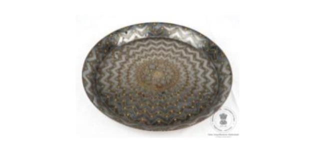

🔇 Is bhasha me is vastu ka audio abhi uplabdh nahi hai.
अभिग्रहण क्रमांक: XXXIII-268-1 थाली

अभिग्रहण क्रमांक: XXXIII-268-1
यह गोलाकार थाली है, जिसके किनारे ऊपर की ओर मुड़े हुए हैं। इसके मध्य भाग में दो संकेंद्रित वृत्त बने हैं, जिनमें पुष्प,लताएं और बेल-बूटों की आकृतियाँ अंकित हैं। इनके चारों ओर जिगज़ैग (टेढ़ी-मेढ़ी) डिज़ाइन बनाई गई है, जिसके प्रत्येक कोण पर पत्तियों की आकृतियाँ हैं। थाली चाँदी, ताँबे के घटकों तथा जस्ता मिश्रधातु से निर्मित है। बाहरी सतह पर भी जिगज़ैग अलंकरण किया गया है। सभी डिज़ाइन चाँदी की जड़ाई से बनाए गए हैं। बीदरी कला में प्रायः अशर्फ़ी-की-बूटी, तारे, बेल, शैलीबद्ध पोस्ता के पौधे तथा पुष्प अलंकरण जैसी आकृतियाँ बनाई जाती हैं। यह कलाकृति भारत के कर्नाटक राज्य के बीदर क्षेत्र की बीदरी कला का उत्कृष्ट उदाहरण है। इसका निर्माण 19वीं शताब्दी ईस्वी का माना जाता है।
Acc No: XXXIII-268-1 Plate
Acc No: XXXIII-268-1
A circular plate with curved raised rims and two concentric rings at the center featuring flowers, floral vines, and foliage patterns. It is surrounded by a zig-zag design with leaf motifs at each angle. Crafted from zinc alloy with silver and copper components, all intricate patterns are inlaid in silver. The outer surface also features continuous zig-zag patterns. Common Bidri motifs such as Ashrafi-ki-booti, stars, grapevines, stylized poppy plants, and floral patterns adorn this plate. Originating from Bidar, Karnataka, India, it dates to the 19th century CE.
3. పాత్ర లేదా ప్లేట్
Acc No: XXXIII-268-1
మధ్యలో రెండు కేంద్రీకృత వృత్తాలతో వంగిన ఎత్తైన అంచుతో వృత్తాకార పాత్ర, పువ్వు, పూల తీగ మరియు క్రీపర్ డిజైన్లు, ప్రతి కోణంలో ఆకు నమూనాలను కలిగి ఉన్న జిగ్-జాగ్ డిజైన్లతో చుట్టబడి ఉంటుంది. ప్లేట్ వెండి మరియు రాగి భాగాలు మరియు జింక్ మిశ్రమ పదార్థంతో తయారు చేయబడింది. బయటి ఉపరితలంపై కూడా మెలికలు తిరిగిన డిజైన్లు (Zigzag designs ) ఉన్నాయి. అన్ని డిజైన్లను వెండితో చెక్కారు. పాత్ర వెలుపల జిగ్-జాగ్ డిజైన్లు ఉంటాయి. బిద్రీ నమూనాలు సాధారణంగా అషర్ఫి-కి-బూటి, నక్షత్రాలు, వైన్ తీగలు మరియు శైలీకృత గసగసాల మొక్కలు మరియు పూల మూలాంశాలు వంటి నమూనాలు. ఈ వస్తువు యొక్క కళారూపం భారతదేశంలోని కర్ణాటకలోని బీదర్కు చెందినది. ఇది క్రీ శ 19వ శతాబ్దానికి చెందినదని చెప్పవచ్చు.
۳. پلیٹ
اندراج نمبر: XXXIII-268-1
یہ گول پلیٹ مڑے ہوئے کناروں کے ساتھ تیار کی گئی ہے۔ جس کے مرکزی حصے میں دو دائرے بنائے گئے ہیں۔ ان دائروں کے اندر پھول، پھولوں کی بیل اور دیگر بیل بوٹوں کے نقش بنائے گئے ہیں، جبکہ ان کے گرد ٹیڑھی میڑھی لکیروں کے نقش ہیں جن کے ہر زاویے پر پتوں کے ڈیزائن موجود ہیں۔ یہ پلیٹ چاندی اور تانبے کے اجزا سے تیار کی گئی ہے، جب کہ اس میں زنک کے مرکب دھات کا استعمال بھی کیا گیا ہے۔ پلیٹ کی بیرونی سطح پر بھی ٹیڑھی میڑھی لکیروں کے نقش بنائے گئے ہیں۔ تمام نقش چاندی کی جڑائی سے مزین ہیں۔ بیدری فن کاری میں عموماً اشرفی کی بوٹی، ستاروں، بیلوں، انداز دار افیون کے پودوں اور پھولوں کے نقش جیسے ڈیزائن استعمال کیے جاتے ہیں۔ یہ فن بیدر، کرناٹک، ہندوستان کی بیدری فن کاری سے تعلق رکھتا ہے اور اس کا تعلق انیسویں صدی عیسوی سے ہے۔
অ্যাক্সেস নং: XXXIII-268-1 থালা
अभिग्रहण क्रमांक: XXXIII-268-1
এটি একটি গোলাকার থালা যার কিনারা বাঁকানো ও কিছুটা উঁচু। এর কেন্দ্রে দুটি সমকেন্দ্রিক বৃত্তের মাঝে ফুল, লতা-পাতা ও ফুলের নকশা রয়েছে এবং এর চারপাশ ঘিরে রয়েছে জিগ-জ্যাগ বা আঁকাবাঁকা নকশা, যার প্রতিটি কোণে পাতার নকশা খোদাই করা। থালাটি রূপা, তামা এবং জিঙ্ক সংকর ধাতুর সমন্বয়ে তৈরি। এর বাইরের পৃষ্ঠেও জিগ-জ্যাগ নকশা রয়েছে এবং সমস্ত নকশা রূপার কাজ দিয়ে ফুটিয়ে তোলা হয়েছে। বিদ্রী শিল্পরীতির নকশাগুলোর মধ্যে সাধারণত আশরফি-কি-বুটি, তারা, লতা-পাতা, সুবিন্যস্ত পোস্ত গাছ এবং নানাবিধ ফুলের মোটিফ দেখা যায়। এই শিল্পকর্মটি ভারতের কর্ণাটক রাজ্যের বিদার অঞ্চলের। এটি খ্রিস্টীয় ঊনবিংশ শতাব্দীর নিদর্শন।
Acc No: XXXIII-268-1 પ્લેટ (થાળી)
अभिग्रहण क्रमांक: XXXIII-268-1
કેન્દ્રમાં બે સંકેન્દ્રિત વર્તુળો ધરાવતી વક્ર ઊંચી કિનારીવાળી ગોળાકાર થાળી, જેની વચ્ચે ફૂલ, ફૂલની વેલ અને વેલની આકૃતિ છે, જે દરેક ખૂણે પાનની ડિઝાઇનો ધરાવતી ઝિગ-ઝેગ (વાંકીચૂકી) ડિઝાઇનોથી ઘેરાયેલી છે. આ થાળી ચાંદી અને તાંબાના ઘટકો તથા ઝિંક એલોય (જસતની મિશ્રધાતુ) સામગ્રીમાંથી બનાવવામાં આવી છે. બહારની સપાટી પર પણ ઝિગ-ઝેગ ડિઝાઇનો છે. બધી જ ડિઝાઇનો ચાંદીમાં જડેલી છે. થાળીની આખી બહારની બાજુએ વાંકીચૂકી આકૃતિઓ છે. બિદરી ડિઝાઇનો સામાન્ય રીતે અશરફી-કી-બૂટી, તારા, વેલ અને શૈલીયુક્ત ખસખસના છોડ તથા પુષ્પીય આકારો જેવા નમૂનાઓની હોય છે. આ વસ્તુની કલા શૈલી બિદર, કર્ણાટક, ભારતની છે. તે ઈ.સ. ૧૯મી સદીની છે.
Acc No: XXXIII-268-1 ಪಾತ್ರೆ
अभिग्रहण क्रमांक: XXXIII-268-1
ಮಧ್ಯಭಾಗದಲ್ಲಿ ಹೂವು, ಹೂವಿನ ಬಳ್ಳಿ ಹಾಗೂ ಬಳ್ಳಿಗಳ ವಿನ್ಯಾಸಗಳನ್ನು ಹೊಂದಿರುವ ಎರಡು ಏಕಕೇಂದ್ರೀಯ ವೃತ್ತಗಳು ಮತ್ತು ಬಾಗಿದ ಉಬ್ಬು ಅಂಚನ್ನು ಹೊಂದಿರುವ ವೃತ್ತಾಕಾರದ ತಟ್ಟೆ. ಇದರ ಸುತ್ತಲೂ ಪ್ರತಿ ಕೋನದಲ್ಲೂ ಎಲೆಗಳ ವಿನ್ಯಾಸಗಳನ್ನು ಹೊಂದಿರುವ ವಕ್ರ-ವಕ್ರ ಗೆರೆಗಳ ವಿನ್ಯಾಸಗಳಿವೆ. ಈ ತಟ್ಟೆಯನ್ನು ಬೆಳ್ಳಿ ಮತ್ತು ತಾಮ್ರದ ಅಂಶಗಳು ಹಾಗೂ ಸತುವಿನ ಮಿಶ್ರಲೋಹದ ವಸ್ತುವಿನಿಂದ ಮಾಡಲಾಗಿದೆ. ಹೊರಮೈಯಲ್ಲೂ ವಕ್ರ ಗೆರೆಗಳ ವಿನ್ಯಾಸಗಳಿವೆ. ಎಲ್ಲಾ ವಿನ್ಯಾಸಗಳನ್ನು ಬೆಳ್ಳಿಯಿಂದ ಕುಸುರಿ ಕೆಲಸ ಮಾಡಲಾಗಿದೆ. ತಟ್ಟೆಯ ಸಂಪೂರ್ಣ ಹೊರಭಾಗದಲ್ಲಿ ವಕ್ರ ಗೆರೆಗಳ ವಿನ್ಯಾಸಗಳಿವೆ. ಬಿದ್ರಿ ವಿನ್ಯಾಸಗಳು ಸಾಮಾನ್ಯವಾಗಿ ಅಶ್ರಫಿ-ಕಿ-ಬೂಟಿ, ನಕ್ಷತ್ರಗಳು, ದ್ರಾಕ್ಷಿ ಬಳ್ಳಿಗಳು, ಶೈಲೀಕೃತ ಗಸಗಸೆ ಗಿಡಗಳು ಮತ್ತು ಹೂವಿನ ಶೈಲಿಗಳಂತಹ ನಮೂನೆಗಳಾಗಿರುತ್ತವೆ. ಈ ವಸ್ತುವಿನ ಕಲಾಶೈಲಿಯು ಭಾರತದ ಕರ್ನಾಟಕದ ಬೀದರ್ಗೆ ಸೇರಿದ್ದಾಗಿದೆ. ಇದನ್ನು ಕ್ರಿ.ಶ. 19ನೇ ಶತಮಾನದ್ದೆಂದು ಅಂದಾಜಿಸಲಾಗಿದೆ.
୩. ଥାଳି ବା ପ୍ଲେଟ୍
Acc No: XXXIII-268-1
ଏହା ଏକ ଗୋଲାକାର ଥାଳି, ଯାହାର ଧାରଗୁଡ଼ିକ ସାମାନ୍ୟ ଉପରକୁ ବଙ୍କା ହୋଇ ଉଠି ରହିଛି। ଥାଳିର ମଧ୍ୟଭାଗରେ ଦୁଇଟି କେନ୍ଦ୍ରୀୟ ବଳୟ ରହିଛି, ଯେଉଁଥିରେ ଫୁଲ, ଫୁଲର ଲତା ଏବଂ ସାଧାରଣ ଲତାର ଡିଜାଇନ୍ କରାଯାଇଛି। ଏହାକୁ ଚାରିପଟରୁ ଜିଗ୍-ଜ୍ୟାଗ୍ ଡିଜାଇନ୍ ଘେରି ରହିଛି ଏବଂ ପ୍ରତ୍ୟେକ କୋଣରେ ପତ୍ରର ଡିଜାଇନ୍ ରହିଛି। ଏହି ଥାଳିଟି ରୂପା ଏବଂ ତମ୍ବା ତଥା ଜିଙ୍କ୍-ର ମିଶ୍ରଣରୁ ତିଆରି ହୋଇଛି। ଏହାର ବାହ୍ୟ ପୃଷ୍ଠରେ ମଧ୍ୟ ଜିଗ୍-ଜ୍ୟାଗ୍ ଡିଜାଇନ୍ ରହିଛି। ସମସ୍ତ ଡିଜାଇନ୍ ରୂପାରେ ଖଚିତ। ଥାଳିର ଚାରିପଟେ ଜିଗ୍-ଜ୍ୟାଗ୍ ଡିଜାଇନ୍ ଦେଖିବାକୁ ମିଳୁଛି। ବିଦ୍ରି କଳାରେ ସାଧାରଣତଃ ଅଶର୍ଫ୍-କି-ବୁଟି, ତାରା, ଲତା, ଡିଜାଇନ୍ କରାଯାଇଥିବା ପୋଷ୍ଟର ଫୁଲ ଏବଂ ବିଭିନ୍ନ ଫୁଲର ମୋଟିଫ୍ ଭଳି ପାଟର୍ନ ବ୍ୟବହାର କରାଯାଇଥାଏ। ଏହି କଳାକୃତିଟି ଭାରତର କର୍ଣ୍ଣାଟକ ସ୍ଥିତ 'ବିଦର' ସହରର ଏବଂ ଅନୁମାନ କରାଯାଏ ଯେ ଏହା ଖ୍ରୀଷ୍ଟାବ୍ଦ ୧୯ ଶତାବ୍ଦୀର।
३. ताट
कार्यवाही क्र: XXXIII-268-1
वक्र उठावदार कडा असलेल्या वर्तुळाकार ताटलीच्या मध्यभागी दोन समकेंद्री वर्तुळे असून, त्यात फुले, फुलांच्या वेली आणि साध्या वेलींची नक्षी आहे, ज्यांच्याभोवती नागमोडी नक्षी असून तिच्या प्रत्येक कोनात पानांची नक्षी आहे. ही ताटली चांदी व तांब्याचे घटक आणि जस्ताच्या मिश्रधातूपासून बनवली आहे. बाह्य पृष्ठभागावरही नागमोडी नक्षी आहे. सर्व नक्षी चांदीत जडवलेली आहे. ताटलीच्या सर्व बाहेरील बाजूने नागमोडी नक्षी आहे. बिद्री नक्षीमध्ये सहसा अशर्फी-की-बुटी, चांदण्या, वेली, शैलीदार खसखसीची रोपे आणि फुलांच्या रचना यांसारखे नमुने असतात. या वस्तूचा कलाप्रकार बिदर, कर्नाटक, भारत येथील आहे. हे इ.स. १९ व्या शतकातील आहे.
Acc No: XXXIII-268-1 പ്ലേറ്റ്
Acc No: XXXIII-268-1
മധ്യഭാഗത്തായി പൂക്കൾ, പൂവള്ളികൾ, ലളിതമായ വള്ളിച്ചെടികൾ എന്നിവയുടെ ഡിസൈനുകളുള്ള രണ്ട് കോൺസെൻട്രിക് വലയങ്ങളും, വളഞ്ഞ് പൊങ്ങിനിൽക്കുന്ന വശങ്ങളുമുള്ള വൃത്താകൃതിയിലുള്ള പ്ലേറ്റ്. ഇതിന് ചുറ്റുമുള്ള സിഗ്-സാഗ് ഡിസൈനുകളുടെ ഓരോ കോണിലും ഇലകളുടെ ഡിസൈനുകൾ നൽകിയിരിക്കുന്നു. വെള്ളി, ചെമ്പ് ഘടകങ്ങളും സിങ്ക് സങ്കരലോഹവും ഉപയോഗിച്ചാണ് ഈ പ്ലേറ്റ് നിർമ്മിച്ചിരിക്കുന്നത്. പുറംഭാഗത്തും സിഗ്-സാഗ് ഡിസൈനുകൾ കാണാം. ഈ ഡിസൈനുകളെല്ലാം വെള്ളി കൊണ്ടാണ് പതിപ്പിച്ചിരിക്കുന്നത്. പ്ലേറ്റിന്റെ പുറംഭാഗത്ത് ഉടനീളം സിഗ്-സാഗ് ഡിസൈനുകളുണ്ട്. അഷർഫി-കി-ബൂട്ടി, നക്ഷത്രങ്ങൾ, മുന്തിരിവള്ളികൾ, സ്റ്റൈലൈസ്ഡ് പോപ്പി ചെടികൾ, പൂക്കളുടെ മോട്ടിഫുകൾ തുടങ്ങിയ പാറ്റേണുകളാണ് സാധാരണയായി ബിദ്രി ഡിസൈനുകളിൽ കാണാറുള്ളത്. ഈ വസ്തുവിന്റെ കലാസൃഷ്ടി ഇന്ത്യയിലെ കർണാടകയിലുള്ള ബിദാറിൽ നിന്നുള്ളതാണ്. ഇത് എ.ഡി 19-ാം നൂറ്റാണ്ടിലേതാണെന്ന് കരുതപ്പെടുന്നു.
3. தட்டு (Plate)
Acc No: XXXIII-268-1
இந்த வட்டத் தட்டின் விளிம்பு உயர்த்தப்பட்ட வளைந்த வடிவில் அமைந்துள்ளது. இதன் மையத்தில் ஒன்றுக்குள் ஒன்று அமைந்த இரண்டு வட்டங்கள் காணப்படுகின்றன. அவற்றில் மலர், பூங்கொடி மற்றும் கொடி வடிவ அலங்காரங்கள் இடம்பெற்றுள்ளன. அவற்றைச் சுற்றி ஜிக்-ஜாக் வடிவ அலங்காரம் அமைந்துள்ளது. ஒவ்வொரு கோணத்திலும் இலை வடிவ அலங்காரம் காணப்படுகிறது.
தட்டின் வெளிப்புறத்திலும் ஜிக்-ஜாக் வடிவ அலங்காரம் தொடர்கிறது. இந்தப் பொருள் வெள்ளி, செம்பு மற்றும் துத்தநாகக் கலவையால் உருவாக்கப்பட்டுள்ளது. அனைத்து அலங்காரங்களும் வெள்ளிப் பதிப்பு நுட்பத்தில் செய்யப்பட்டுள்ளன. பீத்ரி கலைப்பாணியில் பொதுவாக அஷர்ஃபி-கி-பூட்டி, நட்சத்திரங்கள், கொடிவகை அலங்காரங்கள், பாணிப்படுத்தப்பட்ட பாப்பி செடிகள் மற்றும் மலர் வடிவங்கள் இடம்பெறுவது வழக்கம். இந்தக் கலைப்பொருள் கர்நாடக மாநிலம், பீதர் பகுதியைச் சேர்ந்தது. இது கி பி பத்தொன்பதாம் நூற்றாண்டைச் சேர்ந்ததாகும்.
தட்டின் வெளிப்புறத்திலும் ஜிக்-ஜாக் வடிவ அலங்காரம் தொடர்கிறது. இந்தப் பொருள் வெள்ளி, செம்பு மற்றும் துத்தநாகக் கலவையால் உருவாக்கப்பட்டுள்ளது. அனைத்து அலங்காரங்களும் வெள்ளிப் பதிப்பு நுட்பத்தில் செய்யப்பட்டுள்ளன. பீத்ரி கலைப்பாணியில் பொதுவாக அஷர்ஃபி-கி-பூட்டி, நட்சத்திரங்கள், கொடிவகை அலங்காரங்கள், பாணிப்படுத்தப்பட்ட பாப்பி செடிகள் மற்றும் மலர் வடிவங்கள் இடம்பெறுவது வழக்கம். இந்தக் கலைப்பொருள் கர்நாடக மாநிலம், பீதர் பகுதியைச் சேர்ந்தது. இது கி பி பத்தொன்பதாம் நூற்றாண்டைச் சேர்ந்ததாகும்.